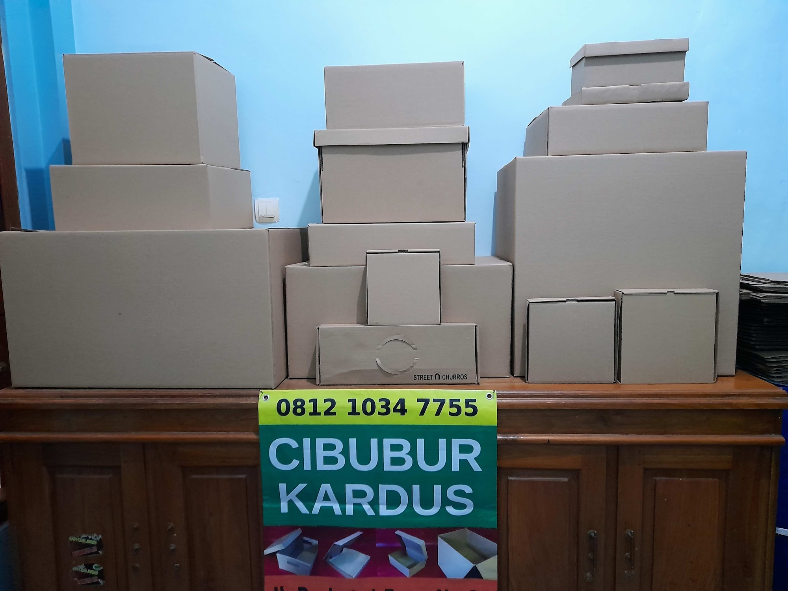
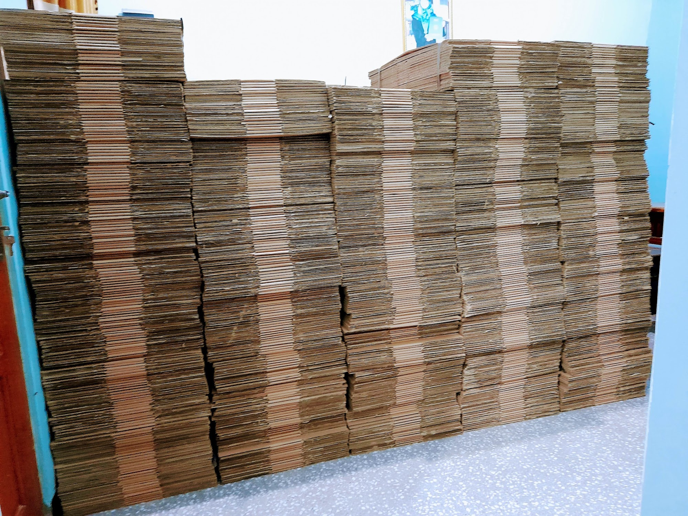
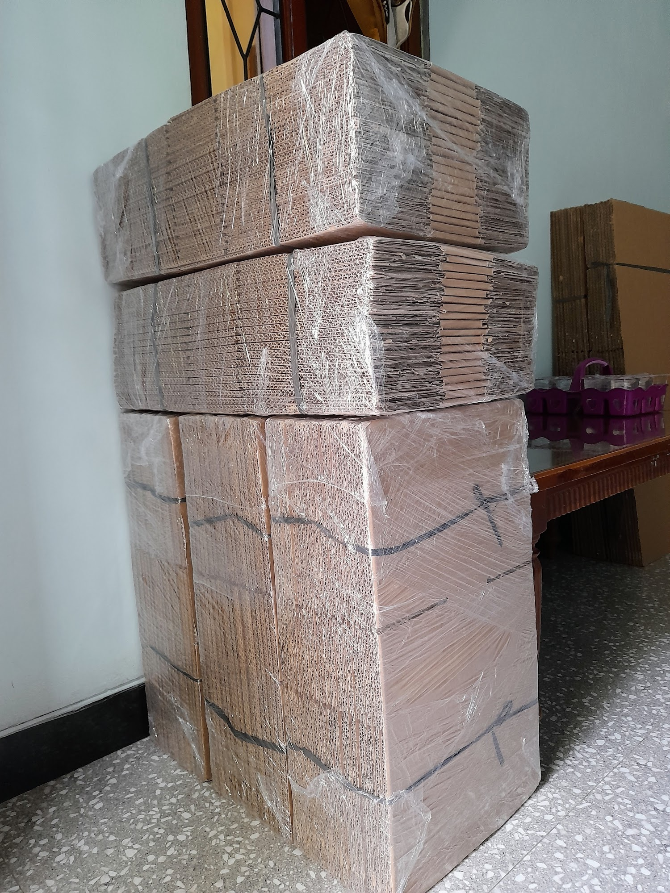
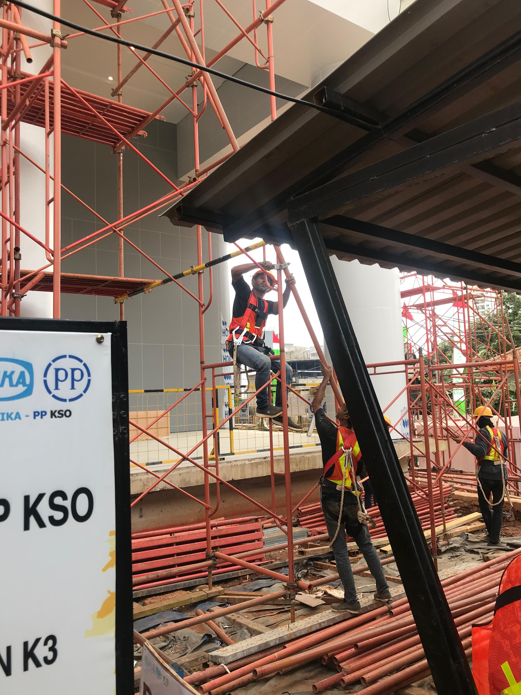

Customer Service & Admin Staff
Cibubur Kardus - Family Business
Jul 2024 - Present [2 Years 2 Mos]- Served customers by handling inquiries, orders, and product requests to ensure a positive customer experience.
- Assisted with the flow of incoming and outgoing goods, including checking and coordinating product movement.
- Prepared and packed cardboard products according to customer orders and delivery requirements..
- Managed customer orders and provided updates regarding product availability and order status.
- Maintained administrative records related to customer orders and product shipments.
- Supported daily business operations to ensure smooth customer service and order fulfillment.



Environment, Health and Safety Intern
PT Wijaya Karya (Persero) Tbk - RSPON Project
Jan 2025 - Feb 2025 [2 mos]- Conducted routine HSE inspections to ensure compliance with occupational health and safety regulations on the construction site.
- Conducted inspections and checks of work tools and equipment to ensure their proper condition and safe use..
- Promoted workplace housekeeping and supported the implementation of the 5S/5R program to maintain a safe working environment.
- Assisted in incident and near-miss investigations by collecting data and documenting findings.
- Monitored compliance with work permit systems and safe work procedures.
- Prepared daily, weekly, and monthly HSE reports, including inspection findings and safety observations.
- Recorded and managed new worker data using spreadsheets and assisted in the preparation and distribution of ID cards